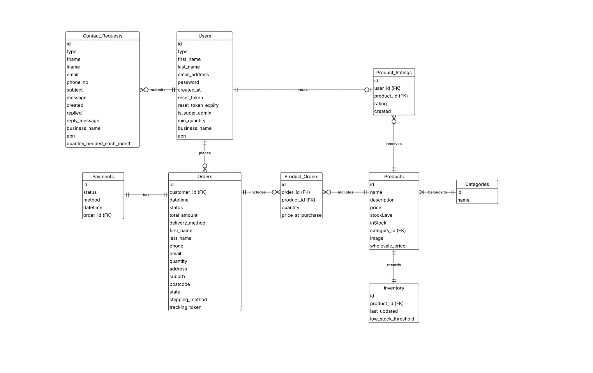
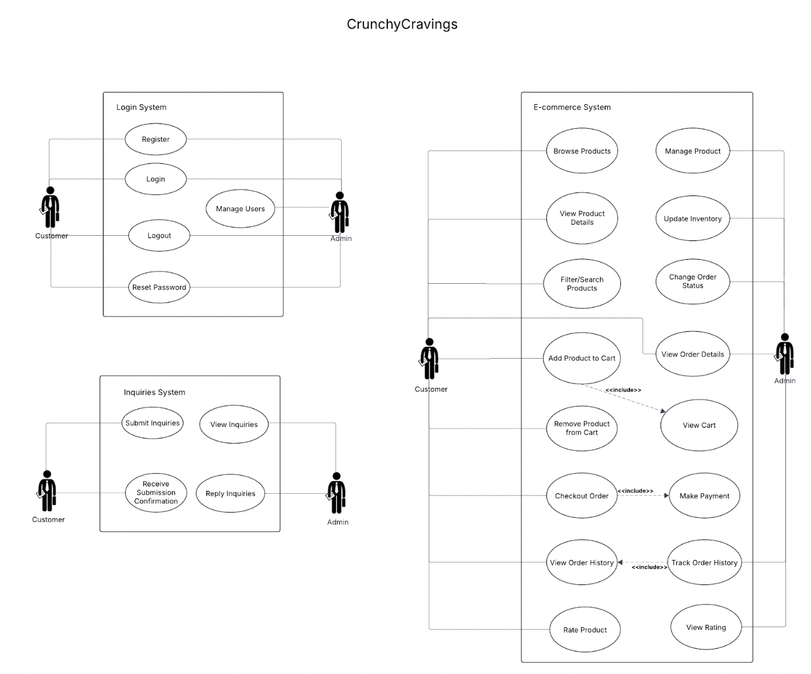
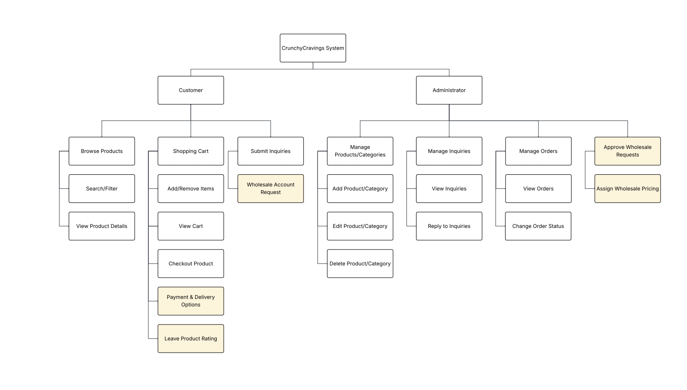

What is Crunchy Cravings?
A startup founded by two brothers making handcrafted Middle Eastern lavosh crackers. Their goal was to go premium: fine dining events, gift hampers, wholesale partners. But when we met them, they had no digital presence at all. Everything ran on in-person sales and manual outreach.
A premium brand with no digital presence.
The client had a great product but zero infrastructure. No way for customers to order online, no system for wholesale buyers to submit enquiries, and no central place for the founders to track anything. On top of that, the brand had a very specific identity: artisan, premium, Middle Eastern-inspired. The digital solution had to feel like an extension of that.
The trickiest part from a BA perspective was scoping realistically. The client came in with big ideas including a chatbot and AI product recommendations. Part of my job was prioritising what was achievable in two iterations and clearly documenting what was future state.
From first meeting to final handover
What I made
Click the cards with a preview to explore them.



What we shipped
A fully working ecommerce platform delivered across 2 agile iterations, signed off by the client and showcased at the final handover.